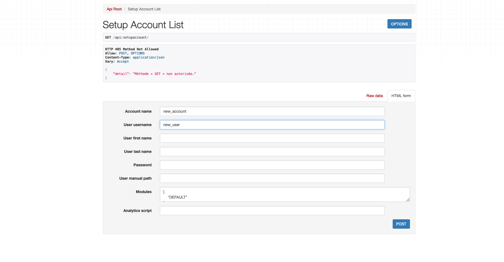
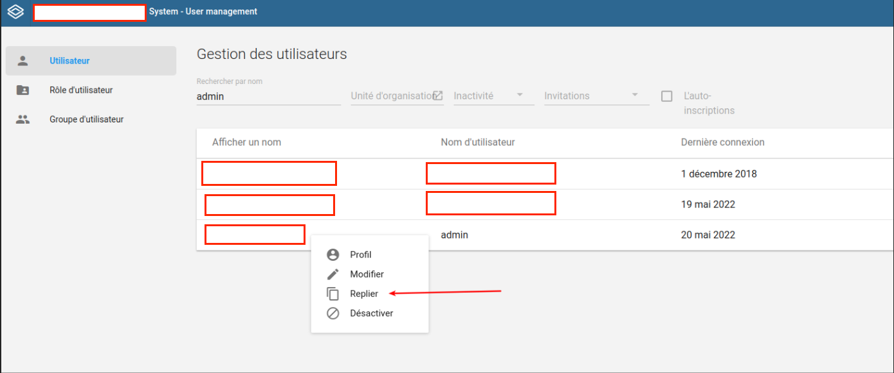
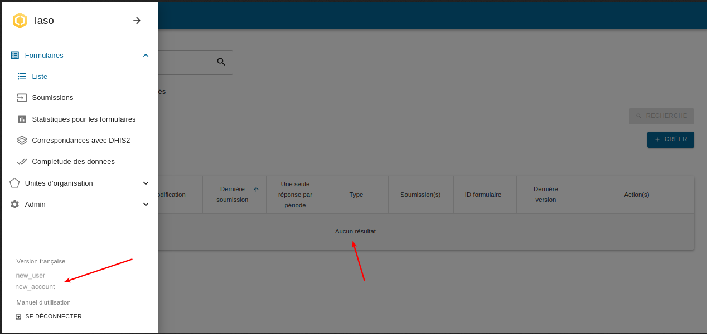
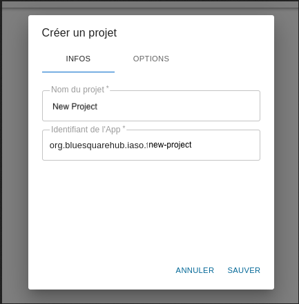
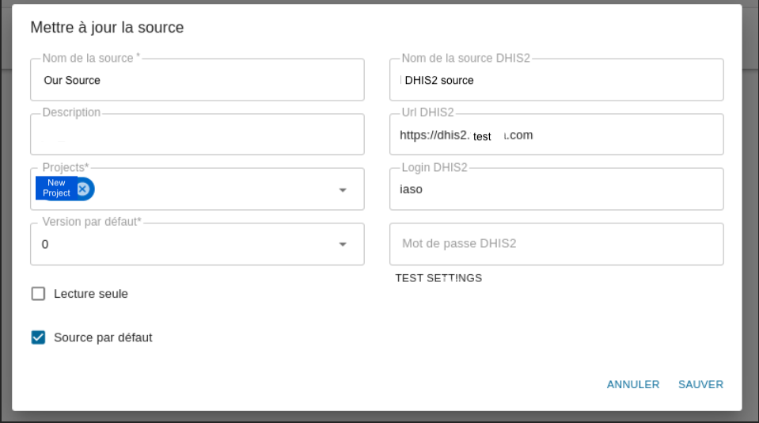
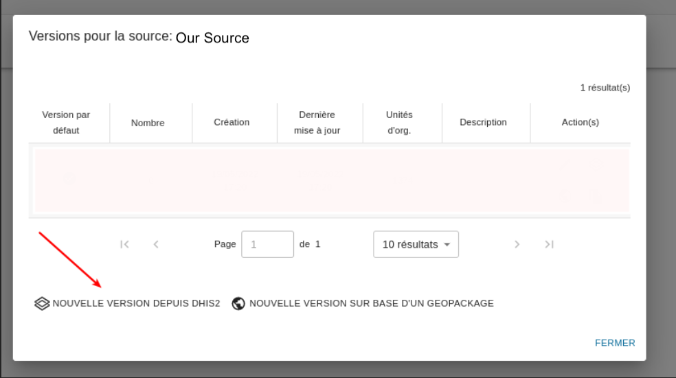
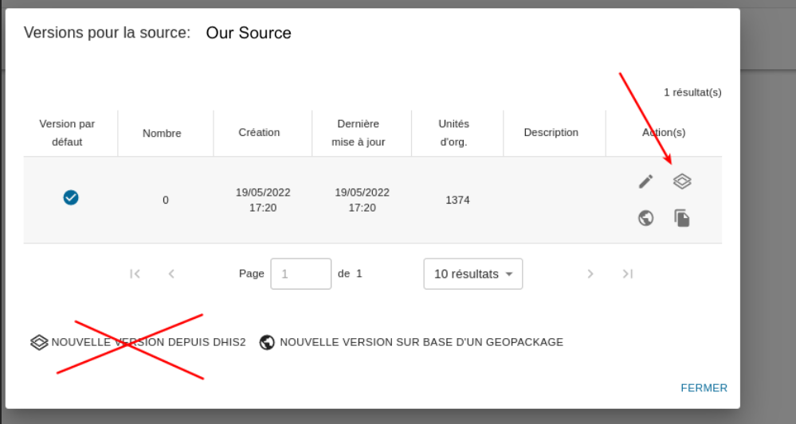

1. Setup an empty iaso account#
Find someone with appropriate access right (django admin required)
https://iaso.bluesquare.org/api/setupaccount/

Use and store the user/password in a password manager
2. Create a dedicated DHIS2 for iaso#
We want to keep track of which app is changing which data/metadata of dhis2 so please don’t use the main/default “admin” user but a dedicated one.
-
Go in the dhis2 “Users / Utilisateurs” module
-
“Duplicate the admin”

- Generate a password with password manager (need at least one special char)

3. Login in iaso with the user created at step 1#
Verify the account is empty or in the left menu
Avoid doing the next steps with the django admin, as it can lead to industrial accident: the user may be linked to a totally different account/project you might end up with the pyramid of a project filled with orgunits of another country.

4. Add a new project#
Use the naming used by clients if applicable.

Promote “good behavior” by enabling authentication by default

5. Create a new datasource#
Use the user created at step 2
Make the source the default one

6. Create a new (first) Version of the data source#
You can import this first version

7. Updating the pyramid#
IMPORTANT note that if you “add new orgunits or add/change groups” that’s not previous step screen that you should use
but the “update” button on the default version !

If you create a new version “swap it to the default version” this detection will be broken since incoming submission will be attached to different orgUnit iaso id.
8. What's next ?#
-
Use the Mobile app in the store and provide the appId/user/password
-
Start configuring the iaso forms
-
try to be consistent and future proof in the naming !
this is good :
``` PMA - Qualité 01 - Indicateurs généraux PMA - Qualité 02 - Plan financier PMA - Qualité 03 - Consultation Postnatale ... PMA - Qualité 10 - Vaccination PMA - Qualité 11 - Accouchements PMA - Quantité PCA - Qualité ...
this is **BAD** :
PMA - Qualité 1 - Indicateurs généraux PMA - qualité 10 - Vaccination PMA - Qualité 11 - accouchements PMA - qualité 2 - plan financier PMA - Qualité 3 - consultation Postnatale... ... PMA - Quantité Qualité - PCA - ... ``` - computers are really bad at sorting in natural order so prefer 01 02 03 - be consistent in your upper/lower case usage - be consistent by prefixing the entity type (no need to put the country in it, we have limited space in the mobile app)